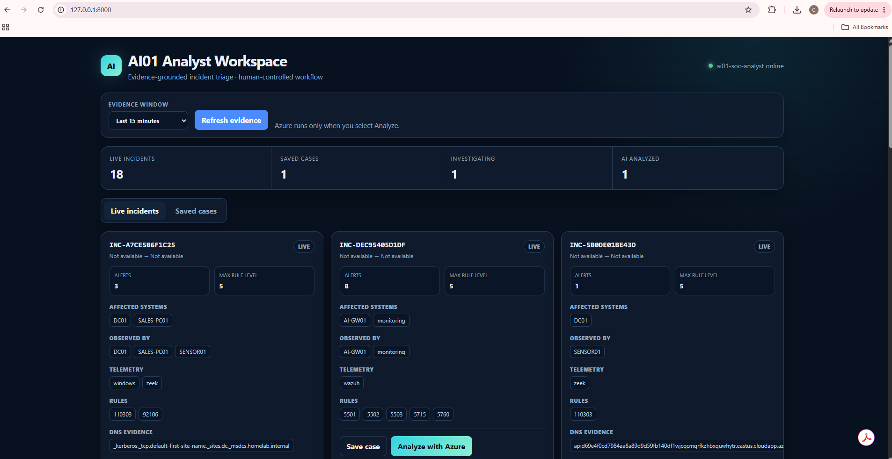
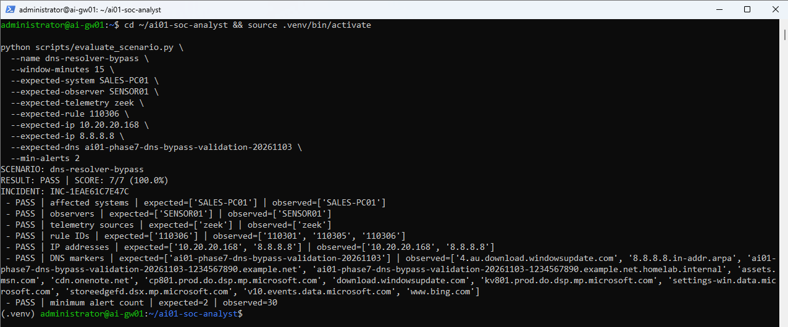
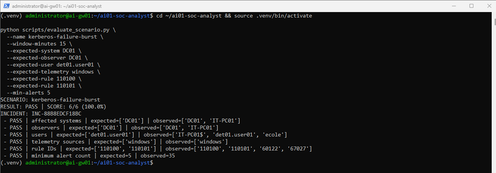
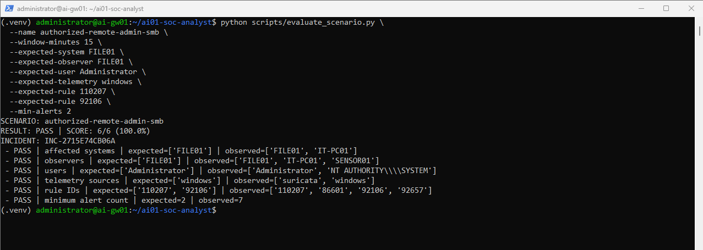

AI / ML SECURITY · AI01
AI-Assisted SOC Analyst
I built a working analyst workspace that turns Wazuh, Zeek, and Suricata alerts into source-aware incidents, saves case progress, and lets an analyst request evidence-grounded Azure AI analysis when it is useful.
THE PROBLEM
Alerts needed context and a place to work
My SOC01 platform already collected endpoint and network telemetry, but an alert list did not answer which machine was affected, which sensor saw the event, or whether separate observations belonged to the same investigation. A DNS anomaly or a rule mentioning pass-the-hash is a lead, not a confirmed compromise.
AI01 adds a bounded evidence window, deterministic incident grouping, an asset inventory, saved cases, analyst notes and optional structured analysis. The analyst stays responsible for conclusions and disposition.
ARCHITECTURE
Keep the evidence path visible
A read-only Python collector queries the Wazuh indexer over HTTPS with pinned server SPKI. It normalizes Windows and network fields, enriches known IPs from a local asset inventory, and groups related evidence before the UI displays an incident. Affected systems and observed by are separate: SENSOR01 may observe traffic from SALES-PC01 without becoming the affected host.
When I select Analyze, Azure AI receives the selected incident evidence and returns structured facts, hypotheses, ATT&CK context, investigation steps and missing evidence. SQLite stores case status, notes and analysis. The service runs as an unprivileged account under systemd, binds to loopback, and has a separate health-check timer.
HUMAN-CONTROLLED WORKFLOW
Choose evidence, save a case, then analyze
The workspace shows the evidence window and live incident cards with rule IDs, source-aware system labels, IPs and DNS markers. An analyst saves a case, updates its status and notes, and requests analysis for that incident. The saved record and its AI output survived a service restart and a host reboot during validation.


PROBLEMS SOLVED
Normalize the right fields and keep the right distinctions
| Issue | What I changed |
|---|---|
| Zeek DNS fields | Mapped dotted Zeek keys from the Wazuh JSON shape into consistent IP, port, UID and DNS evidence fields. Tuned rules for long queries, resolver bypass and missing responses. |
| Observer vs affected asset | Used asset enrichment and separate fields so SENSOR01 remains the observer while SALES-PC01 or DC01 is the affected system. |
| SMB case attribution | Correlated a nearby FILE01 privileged Administrator logon with the admin-share alert, preserving Suricata's NTLM/SMB context. Rechecked after index ingestion settled. |
| Service operation | Deployed a dedicated service identity, private database and environment file, restart policy and timer. A first health check raced startup; later checks, forced restart and reboot passed. |
CONTROLLED LIVE EVALUATION
Three distinct scenarios, checked against expected evidence
| Scenario | Expected and observed | Result |
|---|---|---|
| Direct DNS resolver bypass | SALES-PC01 → 8.8.8.8; SENSOR01 / Zeek; rule 110306 and query marker | 7 / 7 |
| Kerberos failure burst | DC01; det01.user01; Windows rules 110100 and 110101 | 6 / 6 |
| Authorized remote admin SMB | IT-PC01 → FILE01; Administrator; rule 110207 and 92106; Windows and Suricata | 6 / 6 |
The Python regression suite finished with 39 passed. These scores verify three controlled lab exercises against known expectations; they do not measure general detection accuracy or a false-positive rate.






LESSONS AND LIMITS
Good triage depends on provenance and uncertainty
Index latency can make a fresh event appear absent; I checked raw records and repeated the evaluation after ingestion. Rule descriptions express detection logic, not a verdict. In the SMB case, the administrative share access was explicitly authorized for the exercise, and AI01 treated lateral movement and pass-the-hash as hypotheses requiring additional process, Windows event and packet evidence.
THE RESULT
An investigation I can explain from the evidence up.
AI01 joins endpoint and network observations into reviewable incidents, preserves case state, and makes the model's missing evidence as visible as its proposed conclusions.